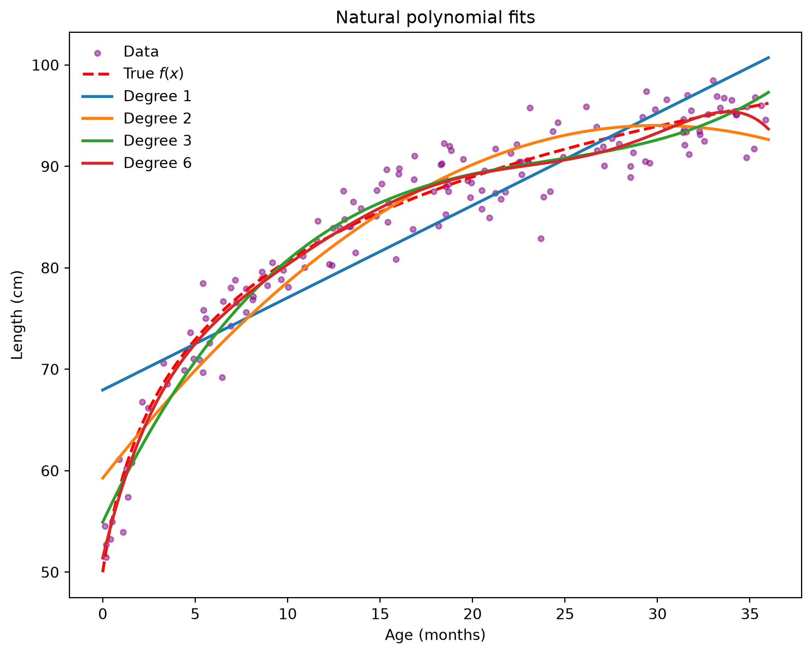
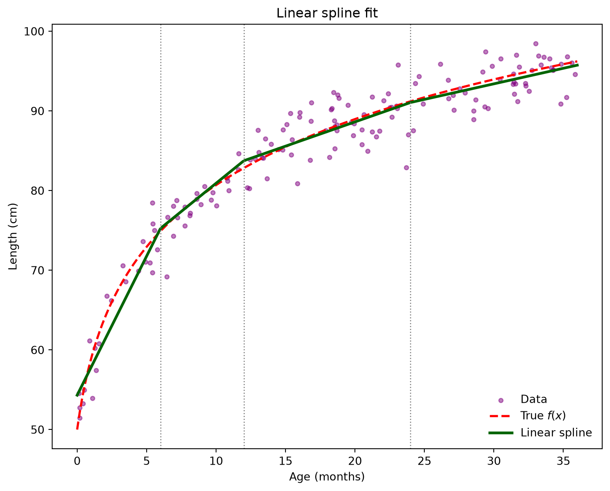

Suppose we measure two quantities, such as a child’s age (\(x\)) and child’s length (\(y\)) on many children. In regression (prediction modeling), we have a function \(f\) which takes in an input \(x\) and returns an average output at that input. The goal of prediction modeling is to learn \(f\) from data, so that for a new child we can predict their length using \(f(x)\).
Children of the same age do not all have the same length. We therefore write the observed length as the average length at that age \(f(x)\) plus the individual’s random deviation from that average, called the noise, \(\varepsilon\):
\[
\underbrace{y}_{\text{observed length of a child at age x}} = \underbrace{f(x)}_{\text{true average length of child at age x (unknown)}} + \underbrace{\varepsilon}_{\text{noise}}
\] We never observe \(f\) directly, so we estimate it from data and write the estimate as \(\hat f\). The predicted length of a child at age \(x\) is given by:
\[
\underbrace{\hat y}_{\text{predicted length at age } x}
=
\underbrace{\hat f(x)}_{\text{estimate of the average length at age } x}
\]
The gap between what we observed and what we predicted is the residual. It is our estimate of the noise \(\varepsilon\):
The numbers \(\beta_j\) are the model’s parameters (coefficients), and fitting the model means choosing them using the data.
linear in \(\boldsymbol\beta\) (the parameters) means each \(\beta\) is scaled by something or added to something (linear cominbation). No \(\beta\) is squared, put in an exponent, or multiplied by another \(\beta\).
linear in \(x\) (the predictor) means the curve is a straight line when you plot it.
Model
Linear in \(x\)?
Linear in \(\boldsymbol\beta\)?
\(\beta_0 + \beta_1 x^2\)
no
yes
\(\beta_0 + \beta_1^2 x\)
yes
no
\(\beta_0 + \beta_1 x\)
yes
yes
The model also says how spread out the noise is around the average which is the conditional variance. We assume the spread is the same everywhere:
\[
\text{Var}(Y \mid \mathbf{x}) = \sigma^2 .
\]
For a single child \(i\), the model can be written out in full. This is called the scalar form:
\[
y_i = \beta_0 + \beta_1 x_{i1} + \cdots + \beta_p x_{ip} + \varepsilon_i,
\qquad \varepsilon_i \overset{\text{iid}}{\sim} \text{Normal}(0,\ \sigma^2).
\] With \(n\) children we stack everything into vectors which can be represented as matrices:
\(Y\): \(n \times 1\)outcome vector; \(Y_i\) is the outcome for each observation \(i\).
\(\mathbf{x}\): the predictor vector of predictor values for each observation \(i\) (with a leading 1 for the intercept). A plain \(x\) is a single predictor.
\(X\): \(n \times (p+1)\)design matrix; the first column is all ones for the intercept; \(X_{ij}\) is the \(j\)-th predictor value for observation \(i\).
\(\beta_j\): are the model’s parameters (coefficients). Fitting the model means choosing them using the data.
\(\boldsymbol\beta\): \((p+1) \times 1\)coefficient vector; \(\beta_0\) is the intercept and \(\beta_j\) is the coefficient for the \(j\)-th predictor.
\(\mathbf{x}\boldsymbol\beta\): the dot product of the predictor vector with the coefficient vector (using matrix multiplication).
\(\sigma^2\): scalar, the conditional variance (how spread out the noise is around the average).
\(\boldsymbol\varepsilon\): \(n \times 1\)error vector; one noise term each observation \(i\).
\(\mathbf{0}_n\): vector of all zeros of length \(n\).
\(I_n\): identity matrix of size \(n\) (ones on the diagonal, zeros elsewhere).
7.2 Data Generation Model:
Below describes the data generation function for a randomly generated sample of 150 children whose predictor \(x\) denoting children age in months.
import numpy as npimport pandas as pd# create a random number generator of seed 7rng = np.random.default_rng(7)# sample of 150 childrenn =150# generates the predictor x. It draws 150 random variables (values) for age uniformly distributed between 0 and 36 months, so every age from birth to 3 years is equally likely.age = rng.uniform(0, 36, n)# This is the true average function f(x) = E[Y|x]def f_true(a):# true relations between child length and age is logarithmic# At birth a = 0, f = 50 + 12.8(0) = 50 cm (newborn height)# At 36 months, f = 50 + 12.8(log(37)) = 96 cm (3-year-old height)return50+12.8* np.log1p(a) # true average length (fast grwoth rate for early months, slower grwoth rate for later months)# observed = true average + noiselength_cm = f_true(age) + rng.normal(0, 2.5, n)# noise is normally distributed with mean 0 and variance of 2.5 cmdf = pd.DataFrame({"age_months": age, "length_cm": length_cm})df.head(10)
age_months
length_cm
0
22.503437
90.444789
1
32.299697
93.135009
2
27.924685
92.251388
3
8.107459
76.875822
4
10.805986
81.618064
5
31.447924
93.601180
6
0.189551
51.471967
7
29.564223
90.327389
8
28.694499
91.387197
9
16.845658
91.021675
7.3 The Problem with a Straight Line:
The problem: a straight line is too rigid. The model \(f(x) = \beta_0 + \beta_1 x\) says that every extra month of a child’s age adds the same \(\beta_1\) cm of length, at every age. Real growth however, plateaus where the child may grow more rapidaly during the early months of infancy but for later months of infancy, they grow as a slwoer rate, creating a bending in the curve. A straight line cannot bend, so it will over-predict in some regions and under-predict in others, no matter how much data we collect. (A multiple linear regression is not a good fit).
Code
import numpy as npimport matplotlib.pyplot as plt# straight-line (least squares) fit and its residualsslope, intercept = np.polyfit(age, length_cm, 1)resid = length_cm - (intercept + slope * age)age_grid = np.linspace(0, 36, 200)# average residual within age bins (a simple smooth)edges = np.linspace(0, 36, 9)centers = (edges[:-1] + edges[1:]) /2bin_means = [resid[(age >= lo) & (age < hi)].mean()for lo, hi inzip(edges[:-1], edges[1:])]fig, ax = plt.subplots(1, 2, figsize=(10, 3.8))ax[0].scatter(age, length_cm, s=14, color="steelblue", alpha=0.6)ax[0].plot(age_grid, intercept + slope * age_grid, color="darkorange", lw=3, label="Straight line")ax[0].plot(age_grid, f_true(age_grid), "r--", lw=2, label="True average $f(x)$")ax[0].set(xlabel="Age (months)", ylabel="Length (cm)", title="Straight-line fit")ax[0].legend(loc="lower right", frameon=False)ax[1].scatter(age, resid, s=14, color="steelblue", alpha=0.6)ax[1].axhline(0, color="black", ls="--")ax[1].plot(centers, bin_means, color="purple", lw=3, marker="o", label="Average residual per age bin")ax[1].set(xlabel="Age (months)", ylabel=r"Residual $\hat{\varepsilon}$", title="Residuals of the straight line")ax[1].legend(loc="lower center", frameon=False)plt.tight_layout()plt.show()
Figure 7.1: Left: a straight line fit to curved growth data. Right: the residuals of that fit.
The straight line sits above the data at the youngest and oldest ages, so it over-predicts there (negative residuals). In the middle it sits below the data, so it under-predicts (positive residuals). If the line were a good model, the residuals would scatter randomly around zero. Instead the purple curve shows a systematic upside-down U pattern. This is the signal that the true relationship bends, and collecting more data will not fix it.
7.4 Basis Expansion:
The key idea: The linear spline is a linear model, meaning it is linear in the parameters \(\boldsymbol\beta\) even though the relationship between the child’s length and age is not a straight line, so it is not linear in \(x\). The fitting method from the previous section only needs the model to be a weighted sum with the \(\beta\)’s as weights. It does not care what the quantities being weighted are. So instead of feeding the model \(x\) itself, we can feed it features of \(x\), called basis functions\(b_1(x), \dots, b_M(x)\). This is called a basis expansion:
A basis function allows us to expand the predictor \(x\) into a vector of features \(\Phi(x) = \big(b_0(x), b_1(x), \dots, b_M(x)\big)'\) and build the curve as a weighted sum of them. Each basis function evaluated at the data becomes one column of the design matrix, with entries \(X_{im} = b_m(x_i)\). Everything else is unchanged:
\[
Y = X\boldsymbol\beta + \boldsymbol\varepsilon \quad\longrightarrow\quad Y = \Phi(X)\boldsymbol\beta + \boldsymbol\varepsilon, \qquad
\]
This works like building the point \((3,2)\) from the blocks \((1,0)\) and \((0,1)\) as \(3(1,0) + 2(0,1)\). The coefficients \(\beta_m\) say how much of each block to use. For example, the basis \(1, x, x^2\) builds every curve of the form \(\beta_0 + \beta_1 x + \beta_2 x^2\). Each basis function evaluated at the data becomes one column of the design matrix \(X\).
Replacing \(x\) with basis functions \(b_0(x), \dots, b_M(x)\) changes only the columns of the design matrix. We write the expanded design matrix as \(\Phi\):
The entry in row \(i\) and column \(m\) is \(\Phi_{im} = b_m(x_i)\): basis function \(m\) evaluated at observation \(i\). The model keeps the same form:
Dimension check:\(\Phi'\) is \((M+1)\times n\), so \(\Phi'\Phi\) is \((M+1)\times(M+1)\), \(\Phi'Y\) is \((M+1)\times 1\), and therefore \(\hat{\boldsymbol\beta}\) is \((M+1)\times 1\), one coefficient per basis function.
Example. The three children with ages \(2, 8, 18\) months respectively and the parabola basis \(b_0(x) = 1,\ b_1(x) = x,\ b_2(x) = x^2\):
Each piece only has to describe the data nearby, so the curve is flexible where it needs to be, local, and stable, and because it is still a basis expansion, it is still a linear in \(\boldsymbol\beta\) even though the curve is a parabola in \(x\).
Model
Columns of \(X\)
Shape in \(x\)
Straight line
\(1,\ x\)
line
Parabola
\(1,\ x,\ x^2\)
parabola
Spline
\(1,\ x,\ \dots\) (built from knots)
flexible curve
7.5 Types of Basis Functions:
7.5.1 Polynomials:
Take \(b_d(x) = x^d\), so that
\[
x \longrightarrow \{1,\ x,\ x^2,\ x^3,\ \dots,\ x^p\}, \qquad d = 0, 1, 2, \dots, p.
\] The model is a weighted sum of these powers:
This is not linear in \(x\) (it bends), but it is linear in \(\boldsymbol\beta\), so we can still use least squares, \(\hat{\boldsymbol\beta} = (\Phi'\Phi)^{-1}\Phi'Y\). The design matrix has one column per power of age:
The degree \(p\) controls flexibility. A degree 1 polynomial is a straight line, degree 2 is a parabola, and so on. Higher degree means a more flexible curve, but also more coefficients to estimate.
Code
import matplotlib.pyplot as plt# create 200 evenly spaced ages from 0 to 36, in sorted order. The real age values are random and unsorted (would have looked like zigzag lines)# the grid gives a smooth x-axis for drawing the fitted curvesage_grid = np.linspace(0, 36, 200) # function that takes ages x and a polynomial degree and returns the design matrix Phidef poly_basis(x, degree):# create design matrix with columns 1, x, x^2, ..., x^degree# range(degree + 1) gives 0, 1, ..., p# The + 1 is there because range stops before its endpoint, and we want to include p# x**d for d in ... builds a list of vectors, x^0, x^1, x^2, ...., x^p. Each one is a column of Phi. Since$x^0 = 1, the first column is all ones, which is the intercept# np.column_stack puts those vectors side by side as columns, giving an n x (p+1) matrixreturn np.column_stack([x**d for d inrange(degree +1)])fig, ax = plt.subplots(figsize=(9, 7))ax.scatter(age, length_cm, s=14, color="purple", alpha=0.5, label="Data") # plot the 150 datapointsax.plot(age_grid, f_true(age_grid), "r--", lw=2, label="True $f(x)$") # Draws the true curve# Repeats the next four lines once for each polynomial degree, so each pass fits and draws one curvefor degree in [1, 2, 3, 6]: Phi = poly_basis(age, degree) # builds the design matrix at your 150 observed ages. The shape is 150 x (p+1) beta_hat = np.linalg.lstsq(Phi, length_cm, rcond=None)[0] # least squares fit = poly_basis(age_grid, degree) @ beta_hat # predictions on grid ax.plot(age_grid, fit, lw=2, label=f"Degree {degree}") ax.set(xlabel="Age (months)", ylabel="Length (cm)", title="Natural polynomial fits")ax.legend(frameon=False)plt.show()

Figure 7.2: Natural polynomials of degree 1, 2, 3, and 6 fit to the child growth data.
Key parts of the code
poly_basis(x, degree) builds the design matrix \(\Phi\). The list comprehension [x**d for d in range(degree + 1)] computes \(x^0, x^1, \dots, x^p\), and np.column_stack places each power in its own column. Since \(x^0 = 1\), the first column is the intercept.
Phi = poly_basis(age, degree) is \(\Phi\) evaluated at the 150 observed ages, so it has shape \(150 \times (p+1)\).
np.linalg.lstsq(Phi, length_cm, rcond=None)[0] solves the least squares problem and returns \(\hat{\boldsymbol\beta}\). It computes the same answer as \((\Phi'\Phi)^{-1}\Phi'Y\) but in a numerically safer way than inverting a matrix directly.
poly_basis(age_grid, degree) @ beta_hat builds the basis on a smooth grid of ages and multiplies by \(\hat{\boldsymbol\beta}\). This is the weighted sum \(\sum_d \hat\beta_d x^d\), and the grid lets us draw a clean curve.
What we see. The straight line (degree 1) misses the bend, as before. Degree 2 captures some of it, and by degree 3 the fit is close to the true curve. Going to degree 6 improves the fit only slightly. The data are noisy and the true curve is smooth, so extra flexibility has little left to capture.
Pros:
no discontinuities
smooth curve
Cons:
It is a global function: every coefficient affects the whole curve (function), so changing one coefficient \(\beta_m\) changes \(f(x)\) everywhere, and data at one end of the range can change the fit at the other end. High-degree polynomials also tend to oscillate between data points and to diverge in the tails.
7.5.2 Linear Splines:
A linear spline fits a straight line on each segment of the \(x\)-axis and joins the lines at the knots \(K = k_1 < k_2 < \dots < k_K\), so the curve has no jumps.
The hinge function is a way to switch a the direction straight line on at a chosen point (creating a bend). Before the point it does nothing (it equals 0), and after the point it starts rising. It switches the direction of a straight line on at a chosen point \(k_K\) (the knot)
The point is the knot \(k\). The notation \((x - k)_+\) means “take \(x - k\), but if it is negative, use 0 instead.” The small \(+\) is shorthand for “keep only the positive part.” That is the same thing as \(\max(0,\ x - k)\), which picks the larger of 0 and \(x - k\).
\[
(x - k)_+ = \max(0,\ x - k) =
\begin{cases}
0 & x \le k \\
x - k & x > k.
\end{cases}
\]
It equals 0 until \(x\) reaches the knot, and after that it rises with slope 1. Because it starts at 0, it adds a bend to the curve without creating a jump. Adding one hinge per knot to the usual \(1\) and \(x\) gives the basis
Worked example with a knot at \(k = 6\)
Age \(x\)
\(x - 6\)
\((x - 6)_+\)
2
\(-4\)
0
5
\(-1\)
0
6
0
0
8
2
2
10
4
4
20
14
14
For any age up to 6, the hinge is 0. After 6, it equals how far past the knot you are, so it rises by 1 for every extra month. That is what the piecewise formula says:
\[
(x - k)_+ =
\begin{cases}
0 & x \le k \quad \text{(not past the knot yet)}\\
x - k & x > k \quad \text{(past the knot: distance beyond it)}
\end{cases}
\]
If you picture the graph, it is flat along 0 until \(x = 6\), then bends upward as a straight line with slope 1. That bend is the “hinge,” like a door hinge.
As before, this is linear in \(\boldsymbol\beta\), so we fit it with least squares. The design matrix has \(K + 2\) columns, one for each basis function.
For our example, knots = [6, 12, 24] has three knots, so \(K = 3\). The \(K + 2\) comes from counting the columns of the design matrix:
Columns
How many
In our example (\(K = 3\), knots at 6, 12, 24)
intercept, \(1\)
1
\(1\)
age, \(x\)
1
\(x\)
one hinge per knot, \((x - k_j)_+\)
\(K\)
\((x-6)_+,\ (x-12)_+,\ (x-24)_+\)
Total
\(K + 2\)
\(3 + 2 = 5\) columns
The “+ 2” is the intercept and the plain \(x\) column, which every linear spline has regardless of knots. The “\(K\)” part grows with the number of knots we add.
How to read the coefficients. The slope on each segment is a running total:
before the first knot, the slope is \(\beta_1\)
after \(k_1\), the slope is \(\beta_1 + \beta_2\)
after \(k_2\), the slope is \(\beta_1 + \beta_2 + \beta_3\), and so on.
So each hinge coefficient \(\beta_{j+1}\) is the change in slope at knot \(k_j\). This matches the earlier statement that knots control where the slope is allowed to change.
Pro:
no discontinuities
Is a local function since changes in coefficient \(\beta\) will change the specifc segment of the curve defined by the knots which are specific points which breaks up the x-axis into segments.
Cons:
not a smooth curve, has kinks (sharp corners).
Each hinge equals 0 at its own knot, so the pieces always meet. The slope, however, changes suddenly at each knot, which gives the curve a visible sharp corners. Cubic splines remove these corners.
Code
knots = [6, 12, 24] # we specify the location and amount of knots. A list of the ages (in months) where the slope is allowed to change# create function that takes ages x and a list of knots and returns the design matrix Phi.def linear_spline_basis(x, knots):# builds one hinge column per knot, (x - k)_+ = max(0, x - k)# np.maximum replaces every negative value with 0, so the hinge is 0 until the age passes the knot and then grows with slope 1 hinges = [np.maximum(0, x - k) for k in knots] return np.column_stack([np.ones_like(x), x] + hinges) # return the design matrix with columns 1, x, (x - k1)+, (x - k2)+, ...Phi = linear_spline_basis(age, knots) # fits the desgin matrix n x (K + 2) = 150 observations x (K=3 knots + 2) = 150 x 5beta_hat = np.linalg.lstsq(Phi, length_cm, rcond=None)[0] #solves the least squares problem to find beta hat and phi beta hatfit = linear_spline_basis(age_grid, knots) @ beta_hat # rebuilds the same basis on the smooth, sorted grid of ages and multiplies by beta hat using matrix multiplicationfig, ax = plt.subplots(figsize=(9, 7))ax.scatter(age, length_cm, s=14, color="purple", alpha=0.5, label="Data")ax.plot(age_grid, f_true(age_grid), "r--", lw=2, label="True $f(x)$")ax.plot(age_grid, fit, lw=2.5, color="darkgreen", label="Linear spline")for k in knots: ax.axvline(k, color="gray", ls=":", lw=1)ax.set(xlabel="Age (months)", ylabel="Length (cm)", title="Linear spline fit")ax.legend(frameon=False)plt.show()

Figure 7.3: Linear spline with knots at 6, 12, and 24 months.
Code
segments = ["0 to 6", "6 to 12", "12 to 24", "24 to 36"]slopes = np.cumsum(beta_hat[1:]) # beta_1, beta_1+beta_2, ...pd.DataFrame({"Segment (months)": segments, "Slope (cm/month)": slopes}).style.format({"Slope (cm/month)": "{:.2f}"}).hide(axis="index")
Table 7.1
Segment (months)
Slope (cm/month)
0 to 6
3.49
6 to 12
1.42
12 to 24
0.61
24 to 36
0.39
Key parts of the code
knots = [6, 12, 24] are the points where the slope may change. Babies grow fastest early on, so we put more knots at young ages.
np.maximum(0, x - k) computes the hinge \((x - k)_+\) for every age at once. It returns 0 where \(x < k\) and \(x - k\) otherwise.
linear_spline_basis stacks the intercept column np.ones_like(x), the column x, and one hinge column per knot, giving \(K + 2\) columns. Only the basis function changed; the fitting lines (lstsq and then multiplying the grid basis by beta_hat) are the same as before.
np.cumsum(beta_hat[1:]) turns the coefficients into segment slopes. The first value is \(\beta_1\), the second is \(\beta_1 + \beta_2\), and so on, which is exactly the running total described in the math.
ax.axvline(k, ...) draws a dotted vertical line at each knot so the corners are easy to find.
What we see. The curve is made of four straight segments that join at the knots. The slope drops from about 3.5 cm per month before 6 months to about 1.4, 0.6, and 0.4 in the later segments, so the spline captures the “fast early growth, then leveling off” pattern that a single line misses. The typical gap between the spline and the true curve is about 1.0 cm, compared with 3.9 cm for the straight line.
7.5.3 Cubic Splines:
A cubic spline fits a cubic polynomial on each segment and joins the pieces so smoothly that the eye cannot see the knots. Using the same knots \(k_1 < \dots < k_K\) as before, the basis is
This has \(K + 4\) columns and is still linear in \(\boldsymbol\beta\), so we fit it with least squares.
Why cubed hinges? The linear spline used \((x - k)_+\), which has a corner at \(k\). Cubing it, \((x - k)_+^3\), makes the function start at the knot that it is flat there in three ways: its value, its slope, and its curvature (second derivative) are all 0 at \(x = k\). Adding it to the cubic polynomial before the knot therefore changes only the third-derivative term, so across each knot the curve has
the same value (no jumps),
the same slope (no corners),
the same curvature (no sudden change in bending).
This is why a cubic spline is called twice continuously differentiable and looks smooth.
Coefficients. Unlike the linear spline, the individual \(\hat\beta_j\) are hard to read directly. What matters is the fitted curve, not the coefficients.
Figure 7.4: Cubic spline with knots at 6, 12, and 24 months, compared with the linear spline.
Key parts of the code
np.maximum(0, x - k) ** 3 is the cubed hinge \((x - k)_+^3\). The ** 3 is the only difference from the linear spline code, apart from adding the columns x**2 and x**3.
cubic_spline_basis stacks \(1, x, x^2, x^3\) and one cubed hinge per knot, giving \(K + 4\) columns. With three knots that is 7 columns, compared with 5 for the linear spline.
The fitting steps (lstsq, then the grid basis times beta_cub) are unchanged. We again swapped the basis and kept the method.
The linear spline from the previous section is drawn in a faded green so the two can be compared.
What we see. The cubic spline follows the same overall shape as the linear spline, but the corners at the knots are gone and the curve bends smoothly. It is also closer to the truth: the typical gap between the fit and the true curve is about 0.55 cm, compared with 0.98 cm for the linear spline (and 3.9 cm for the straight line), using the same three knots. The cubic spline is slightly less accurate at the far right end of the range, where it overshoots the true curve by about 1.1 cm at 36 months, because there are no data beyond the last point to hold the tail in place. Natural splines, next, address this by forcing the tails to be straight.
A cubic spline can behave badly beyond the outermost knots, because past the last knot nothing holds the cubic in place and it can swing up or down. A restricted cubic spline (RCS) adds one rule to fix this:
The curve must be a straight line before the first knot \(k_1\) and after the last knot \(k_K\).
A cubic stops being a line when its \(x^2\) and \(x^3\) terms are non-zero, so this rule forces those two terms to vanish in each tail. That is 4 constraints in total (2 per tail), which removes 4 of the \(K + 4\) parameters of the ordinary cubic spline. An RCS with \(K\) knots therefore has only \(K\) columns (including the intercept), compared with \(K + 4\).
The basis is
\[
x \longrightarrow \{1,\ x,\ h_1(x),\ h_2(x),\ \dots,\ h_{K-2}(x)\},
\]
The extra two terms subtract off exactly the cubic and quadratic growth that would otherwise appear after the last knot, so each \(h_j\) becomes linear there. In practice it is common to divide each \(h_j\) by \((k_K - k_1)^2\), which only rescales the columns and keeps the numbers a reasonable size.
and it is fit with least squares like every other basis.
The trade-off. The RCS uses fewer parameters and gives stable, straight tails, but it gives up flexibility at the edges. If the true curve is still bending at the ends of the data, a straight tail cannot follow it.
Figure 7.5: Restricted cubic spline versus an ordinary cubic spline, both with knots at 1, 4, 10, 20, and 32 months.
Key parts of the code
cube = lambda u: np.maximum(0, u) ** 3 is a small helper for the cubed hinge \((u)_+^3\), so the formula for \(h_j\) stays readable.
The for j in range(K - 2) loop builds one column \(h_j(x)\) per knot except the last two. The three terms inside are the three pieces of the formula: the usual cubed hinge, minus the correction at the second-to-last knot, plus the correction at the last knot. The fractions are the weights from the math.
cols = [np.ones_like(x), x] starts with the intercept and the linear term, and np.column_stack puts all columns together. The result has \(K\) columns, which is why the legend shows 5 for the RCS and 9 for the cubic spline.
Dividing by (t[K - 1] - t[0]) ** 2 only rescales each column. It does not change the fitted curve.
The fitting steps are the same as in every earlier section. The ordinary cubic spline is refit with the same five knots so the comparison is fair.
What we see. The RCS follows the true curve nearly as closely as the cubic spline while using 5 columns instead of 9. The typical gap from the true curve is about 0.75 cm for the RCS and 0.69 cm for the cubic spline. The difference is in the tails. At 36 months the ordinary cubic spline overshoots the true curve by about 2.6 cm, while the RCS is off by only 0.6 cm, because its straight tail cannot swing away. At birth, both curves are still too high (by about 3.5 cm for the RCS and 4.1 cm for the cubic spline). The true curve bends sharply near 0 months, and neither fit has enough data or flexibility there to follow it.